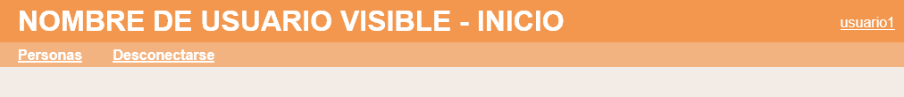

En este ejercicio se debe ampliar la aplicación proporcionada en la plantilla de manera que el nombre del usuario conectado se muestre arriba a la derecha en todas páginas de la aplicación. Además, haciendo clic en el nombre se abrirá una página que mostrará un ficha con los datos del usuario. La aplicación debe funcionar tanto en SQLite como en MySQL. Haga una captura de la pantalla en MySQL en la que se vea la base de datos de la aplicación y el contenido de la tabla de usuarios.
Posición del nombre del usuario

<header>
<p style="float: right; margin-right: 10px;"><a href="usuarios/ficha.php" style="color: white;">root</a></p>
<h1>Nombre de usuario visible - Inicio</h1>
Ficha del usuario